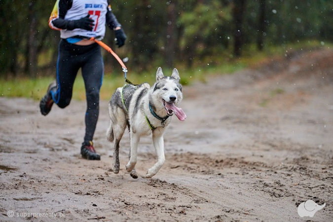
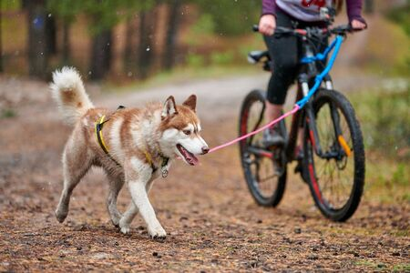
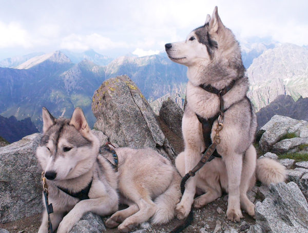
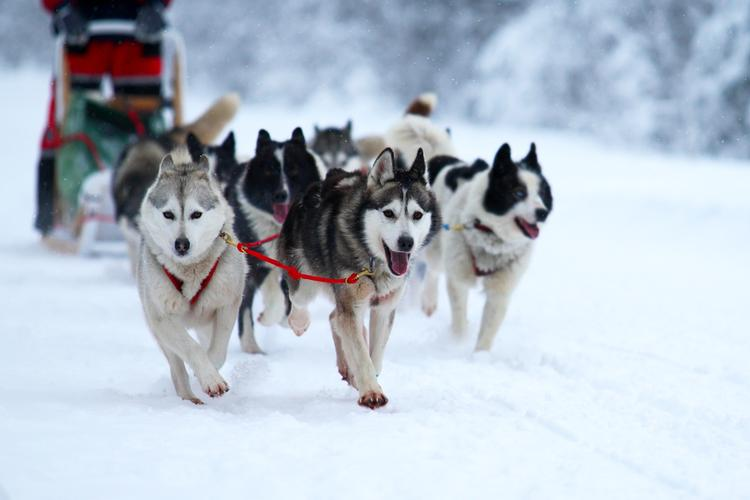

Canicross
Canicross
Dyscyplina wywodząca się wprost ze sportu psich zaprzęgów. Pies biegnie przodem ubrany w specjalne szelki nie krępujące jego ruchów. Do nich przypięta jest linka nie krótsza niż 2,5 metra i wyposażona w odpowiedni elastyczny amortyzator. Łagodzi on szarpnięcia psa i biegacza. Sam zawodnik zaś, ma na biodrach uprząż, która przenosi energię psa i ułatwia bieg człowiekowi. wszystkie rasy północne, genetycznie są niemal stworzone do biegu i sportów zaprzęgowych. A więc przede wszystkim syberiany i malamuty. Jednak równie dobrze mogą się sprawdzić owczarki niemieckie czy wyżły.

Bikejorng
Dyscyplina sportu zaprzęgowego rozgrywana na dystansach sprinterskich, w której jeden lub dwa psy ciągną rower połączone z nim liną z amortyzatorem.

Dogtrekking
poruszanie się z psem przypiętym na uprzęży, w terenie leśnym lub górskim, najczęściej w połączeniu z czytaniem mapy i odnajdywaniem punktów kontrolnych. Zawody w Dogtrekkingu odbywają się zwykle na trasach o długości od 10 do 50 kilometrów.

Psie zaprzęgi
Zaprzęgi rozgrywa się w 6 klasach – w zależności od ilości psów w zaprzęgu i kategoriach – w zależności od rasy psów biegnących w jednym zaprzęgu. Regulamin określa też minima wiekowe maszerów (ludzi – przewodników), budowę trasy, zasady poruszania się na trasie, konstrukcję sprzętu i samego zaprzęgu. W zaprzęgach bierze udział od 2 do nielimitowanej ilości psów. Wyścigi dzieli się na krótko, średnio i długodystansowe. Wyścigi krótkodystansowe, czyli sprint rozgrywane są na dystansie 5-20 km (w zależności od poru roku i klasy), średniodystansowe – na dystansie 40-100 km a długodystansowe na dystansie minimum 100 km (na jeden etap) lub minimum 160 km, gdy są to wyścigi wieloetapowe.
